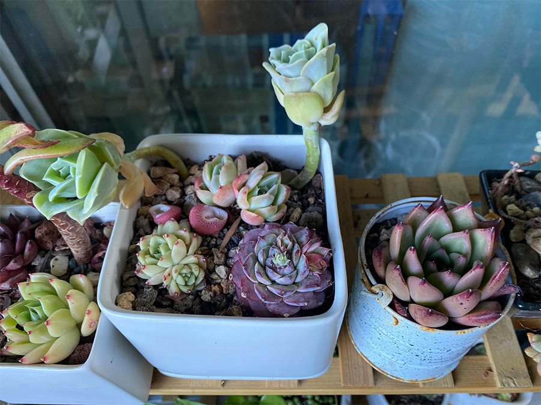

LAURA YIEN - DES 157A - INTERACTIVE MEDIA II - WINTER 2023
Game Design UX Practices
The article “Game Design UX Best Practices” discusses good UI/UX design practices to implement in mobile games. As someone who grew up playing these types of iPad / mobile games, I was especially interested in this article. Some of these patterns I had already noticed as a player while others were new to me. For example, I often play Roblox with my sister on my phone and the keypad to move your character is very close to the store button so I often click on it by mistake. I find it annoying, but as the article discusses I can see why it maximizes profits in that position-otherwise I would never click on it. One thing I thought was interesting was that it's generally better to place a preferred call to action on the right side of a pop-up and not the left side. I always thought that (at least for languages that read left to right) placing the CTA on the left side makes it more likely for the user to click on it since they'll read it first. It was interesting to learn that that was not the case. From this article and my own experience playing mobile games, it is clear that most of these practices are implemented to maximize profit. I wonder if these same practices would still be implemented if the primary focus was on improving the in-game experience instead.
Visual Thinking Analysis
Boba Collage - Laura Yien, 2023.
This image is interesting because it represents who I am-a lover of boba, mildly eccentric, and a fan of chaotic design. I originally made this collage to promote Aggie Public Arts Committee's art show which was called, “Who We Are”, and centered on identity. The theme of our social media campaign was to express our individual identities through photos. This image relates to my topic for my Every Picture Project which is focused on showcasing my top 5 favorite boba places in Davis. Several images of boba are included in this collage, as I drink it often and have adopted it as part of my identity. My archive of my favorite boba places will tell the story of how I've found a sense of belonging and comfort in Davis-my second home-through boba.

Succulents - Jasmine Li, 2023.
This image features various types of succulents in square shaped and round planters. They appear to be on a wooden shelf in front of a window. It showcases succulents in different shapes and sizes and colors ranging from a deep maroon to bright green. One of the most interesting aspects of this photo is the composition. The tall succulent in the middle of the photo breaks the horizontal line dividing it, which makes it a focal point. In addition, the consistent use of greens and red tones in the succulents help to make the photo feel cohesive and unified. The most obvious aspects of this image are that it features succulents in various pots. However, it is not clear what type of succulents these are, how old they are, and where they are precisely located. It is also unclear how valuable these succulents are to their owner.
Visual Thinking Skills
This article on Close Reading and Visual Thinking Skills reminded me of my time in history classes in high school. I took AP World History and AP US History, and often we would practice analyzing political cartoons, photographs, and paintings with similar strategies like paying close attention to the details, placing the photo in larger historical context, and looking into the artist or maker's motivations for creating it. Throughout my time as a design student, I've noticed that visual thinking and close reading skills are key to our work as designers. When I started learning about graphic design, it was difficult for me to notice irregularities in spacing, kerning, and fonts sizes. Often my designs had small inconsistencies or minor mistakes. However, with practice, I was able to strengthen my visual thinking skills and now can be detail oriented and precise in my work. One website I found which used interactive elements is Chungi Yoo's portfolio. As you scroll down the page, images, text, and graphics come into focus. When you hover of things, they also move in response.
Best Practices for Modals
The article Best Practices of Modals/Overlays/Dialog Windows discusses how to correctly use a modal to enhance user
experience. Prior to reading this article, I knew what a modal was but often referred to it as a pop-up
instead of its official name. Although I've used modals previously in my UX/UI projects, I've never
learned the proper guidelines and use cases officially. Generally, I try to limit the use of modals in
my designs because they can sometimes be cumbersome and confusing as the article discusses.
I found this article very helpful as it contains specifics of when to use modals (need user input or
show additional information in context) and how to use them (location, size, including a “close”
button). I also appreciated the discussion of including keyboard accessibility for those that use screen
readers. Accessibility in UX design is not talked about often enough, and I will keep this in mind when
designing modals in the future.
Best Practices in Form Design
The article Best Practices for
Form Design written by Salim Ansari discusses how to design forms which are efficient and easy
to use. He discusses strategies to reduce the cognitive load of filling out forms which can often be
cumbersome and confusing.
One strategy I found particularly interesting was to position labels on the top left of the input field
close to the top border of the field. I have encountered forms where labels are too far away from the
field, or it is confusing to understand which field the label corresponds to. This design makes the
label's intention clear. However, I wonder if this strategy would work for forms in languages that are
read with different conventions than English. If a form was written in a language that read right to
left, would the best place to put a label be on the upper right instead?
An example of a website that uses well designed forms is the Friendly Bureau, which is an online art shop that uses
Shopify to host their website. The shipping and payment forms follow several of the principles outlined
by Ansari including sizing fields according to the character length of content, using specific labeling
action buttons, and displaying labels when inputting information.